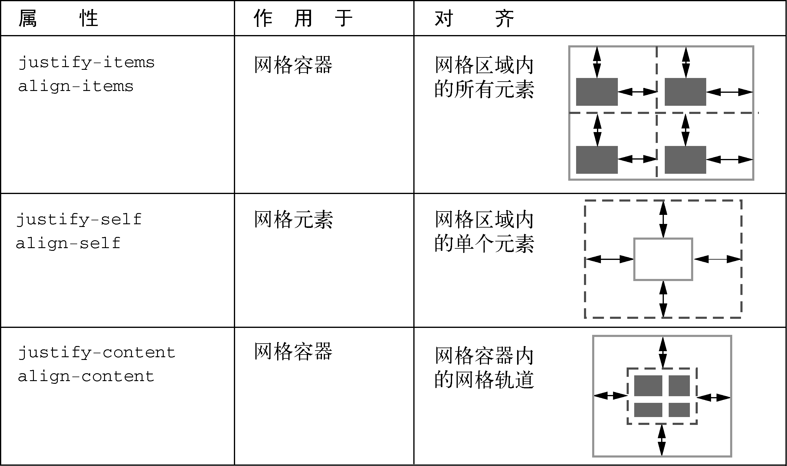

“只需一分钟就能学会，却要用一辈子的时间去精通”
不是编程语言，却要求抽象思维。它不是纯粹的设计工具，却要求创造力。
测试行内样式 < 样式表中样式加important优先级
em的子元素
我是第三方库根元素，请查看css中box-sizing的配置
- 我用来撑开高度，让别的li跟我同高高高高高宫傲公安公安高高
- 我是为了看dispaly: table-cell;垂直居中效果
- css-table-wrapper设置负外边距，出现滚动条
测试负外边距
负外边距折叠
底部元素
底部元素1
猫头鹰选择器
sub2
sub3
sub4
sub5
第二部分 精通布局
我是float元素
||为了查看浮动的效果，浮动浮动为了查看浮动的效果，浮动浮动为了查看浮动的效果，浮动浮动为了查看浮动的效果，浮动浮动为了查看浮动的效果，浮动浮动为了查看浮动的效果，浮动浮动为了查看浮动的效果，浮动浮动为了查看浮动的效果，浮动浮动为了查看浮动的效果，浮动浮动为了查看浮动的效果，为了查看浮动的效果，浮动浮动为了查看浮动的效果，浮动浮动为了查看浮动的效果，浮动浮动为了查看浮动的效果，浮动浮动为了查看浮动的效果，浮动浮动为了查看浮动的效果，浮动浮动为了查看浮动的效果，浮动浮动为了查看浮动的效果，浮动浮动为了查看浮动的效果，浮动浮动为了查看浮动的效果，浮动浮动为了查看浮动的效果，浮动浮动浮动浮动为了查看浮动的效果，浮动浮动为了查看浮动的效果，浮动浮动为了查看浮动的效果，浮动浮动
float效果图：一个容器内的浮动元素会扩展到另一个容器，这样两个容器的文字就能围绕浮动元素排列（虚线高亮的部分是容器）
我不是浮动元素
我是浮动元素1我是浮动元素1我是浮动元素1我是浮动元素1我是浮动元素1我是浮动元素1我是浮动元素1
我是浮动元素2
我是浮动元素3
我是浮动元素4
1
2
3~12
3~12
1
2
Flex布局
- it1
- it2
- it3
- itemitemitem4
1
2
3
4
5
6
7我是额外的
aside1
aside2
我是来串门的，额外加的
我是命名的网格区域实现的布局
aside1
aside2

我是隐式网格布局


网格对齐方式
渐变
阴影
shadow
mix blend mode
mix-blend-mode
间距|行高
- 我是inline1
- 我是inline2
- 我是inline3
- 我是inline4
- 我是inline5
- 我是inline6
- 我是inline7
- 我是inline8
- 我是inline9
- 我是inline10
- 我是inline11
- 我是inline12
- 我是inline13
- 我是inline14
- 我是inline15
- 我是inline16
- 我是inline17
- 我是inline18
- 我是inline19
- 我是inline20
过渡transition,贝塞尔bezier曲线
淡入淡出
- list1
- list2
- list3
- list4
- list5
- list6
用opacity会点到list$上